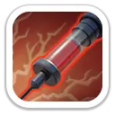
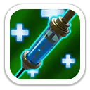
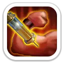
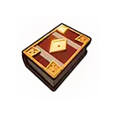
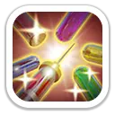

Первая помощь
Массовое лечениеМгновенно восстанавливает здоровье всем дружественным героям в размере, зависящем от атаки Филли.
200% / 220% / 240% / 260% / 280%

Лечение команды · поддержка · защита отряда
Филли — мифический герой копейщиков 2 поколения и один из первых сильных целителей. В Освоении она лечит всю команду и спасает самого слабого союзника, а в Экспедиции усиливает атаку и защиту всех войск и после переработки 2026 года получила сильный защитный навык.
Максимальные базовые показатели героя.
Лечение команды, экстренное спасение союзника и короткий контроль цели.
Мгновенно восстанавливает здоровье всем дружественным героям в размере, зависящем от атаки Филли.
200% / 220% / 240% / 260% / 280%
Мгновенно лечит самого слабого дружественного героя.
100% / 110% / 120% / 130% / 140% от атаки

Отравляет цель, выводит её из строя на 1 секунду и наносит урон.
140% / 154% / 168% / 182% / 196% от атаки
Все три навыка работают на весь отряд, поэтому Филли остаётся полезной поддержкой даже без большого числа копейщиков.

Постоянно повышает атаку и защиту всех войск.
Атака +3/6/9/12/15% · Защита +2/4/6/8/10%

Каждая атака всех войск получает 25% шанс нанести значительно больше урона.
+120% / +140% / +160% / +180% / +200%
Даёт 40% шанс снизить получаемый всеми войсками урон. Это переработанный третий навык Филли.
−10% / −20% / −30% / −40% / −50% получаемого урона

Эксклюзивное снаряжение усиливает главную специализацию Филли — лечение и оборону.

Одна из лучших ранних специализаций Филли. Массовое лечение и лечение слабейшего героя заметно повышают выживаемость команды.
Полезна в ранних поколениях как целитель, особенно если команда выигрывает время для повторного применения её навыков.
Хорошая поддержка благодаря снижению получаемого урона и бонусу здоровья защитных войск от эксклюзивного снаряжения.
Не главный герой для максимального урона. Её навыки работают на все войска, но во 2 поколении атакующий слот обычно выгоднее отдавать более сильным героям.
Да, если вам нужен сильный целитель для Освоения и ранней Арены. Филли очень заметно повышает живучесть команды и после переработки 2026 года стала интереснее как защитная поддержка в Экспедиции. Но если мифические осколки ограничены, во 2 поколении обычно приоритетнее Алонсо, а Филли разумнее развивать без чрезмерных вложений.
Механики сверены по нескольким актуальным базам. Старое описание третьего навыка отдельно проверено как устаревшее.